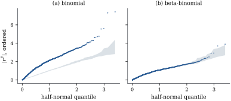

39.2 Diagnostics
A fitted generalized linear model can be wrong in three ways: the linear predictor may omit a term or use a covariate on the wrong scale, the link may be wrong, or the variance function may be wrong. A single number — the deviance, say — cannot tell these apart, and for ungrouped binary data it cannot even tell that something is wrong (Proposition 35.4.1(b)). What follows is a set of plots and tests, each aimed at one of the three, and a worked case in which they give different answers.
39.2.1. Residuals in practice
The three residual types of Definition 34.5.2 differ in what they standardize away. Their common first-order behaviour is the generalized linear version of Eq. 20.1.2.
Let a generalized linear model be fitted by maximum
likelihood, let
(a) (Moments of the Pearson residuals.) To first order in the expansion behind Theorem 34.5.1,
(b) (Level of a simulated envelope.) Let
for each fixed
(c) (Influence.) The one-step deletion results of Theorem 20.3.1 hold with
(d) (Checking the link.) Let
(e) (Checking a covariate: two plots.) The partial residual for covariate
(f) (Checking the variance function.) Suppose the assumed variance function is correct and each observation carries enough information for
Proof.
(a) The expansion used in Theorem 34.5.1 gives, to first order,
(b) The event that
(c) Theorem 20.3.1 is an algebraic identity about a least squares fit. At convergence the generalized linear fit is a weighted least squares fit of
(d) The enlarged model contains the fitted one at coefficient zero and adds one parameter, so Theorem 34.5.5 gives the
(e) The working residual is
(f) By (a),
Remark (Why absolute residuals). A
quantile plot of signed residuals asks two questions at
once, and for a discrete response the answer to the
first is dominated by the discreteness. Plotting
39.2.2. A model that fails, and why
The 1996 American National Election Studies survey
asked its
Panel (a) of Figure
39.2.1 is the half-normal plot with an envelope from
The targeted checks of Proposition 39.2.1
say where the trouble is not. Adding
What is left is the variance function, and panel (b)
makes the case. The local means of
The repair is a variance function with a second
parameter. A beta-binomial model, in which each
respondent has a latent probability from a beta
distribution with mean
The consequences for inference are what Chapter
38 predicts. The age coefficient barely moves, from

import numpy as np
import statsmodels.api as sm
from scipy import optimize, special, stats
anes = sm.datasets.anes96.load_pandas().data
m = 7.0 # days in a week
y = anes["TVnews"].to_numpy(float) # successes out of seven
X = np.column_stack([np.ones(len(y)), anes["age"], anes["educ"], anes["income"]])
n, p = X.shape
fit = sm.GLM(np.column_stack([y, m - y]), X, family=sm.families.Binomial()).fit()
mu = fit.fittedvalues * m # fitted expected days
eta = fit.predict(which="linear")
pearson = (y - mu) / np.sqrt(mu * (1 - mu / m)) # r^P, with phi = 1
print(f"deviance {fit.deviance:8.1f} on {n - p} degrees of freedom")
print(f"Pearson {np.sum(pearson**2):8.1f}; dispersion estimate "
f"{np.sum(pearson**2) / (n - p):.3f}")B = 19 # simulated data sets
def halfnormal_quantiles(k):
"""The horizontal axis: expected half-normal order statistics."""
i = np.arange(1, k + 1)
return stats.norm.ppf((i + k - 0.125) / (2 * k + 0.5))
def envelope(draw, refit_abs_resid, seed):
"""Smallest and largest of B ordered |residual| vectors from the fitted model."""
rng = np.random.default_rng(seed)
out = np.array([np.sort(refit_abs_resid(draw(rng))) for _ in range(B)])
return out.min(axis=0), out.max(axis=0)
def binomial_abs_resid(ysim):
f = sm.GLM(np.column_stack([ysim, m - ysim]), X, family=sm.families.Binomial()).fit()
mu_s = f.fittedvalues * m
return np.abs((ysim - mu_s) / np.sqrt(mu_s * (1 - mu_s / m)))
q = halfnormal_quantiles(n)
lo, hi = envelope(lambda rng: rng.binomial(int(m), fit.fittedvalues).astype(float),
binomial_abs_resid, seed=3901)
ordered = np.sort(np.abs(pearson))
outside, above = np.mean((ordered > hi) | (ordered < lo)), np.mean(ordered > hi)
print(f"binomial model: {100 * outside:.1f}% of the ordered residuals leave the envelope, "
f"{100 * above:.1f}% above it")# (i) is the link right? Add the squared linear predictor and test it.
fit_link = sm.GLM(np.column_stack([y, m - y]), np.column_stack([X, eta**2]),
family=sm.families.Binomial()).fit()
lr_link = fit.deviance - fit_link.deviance
# (ii) is the age term right? A partial residual, on the link scale.
working = (y - mu) / (mu * (1 - mu / m)) # (y - mu) dEta/dMu
partial_age = fit.params[1] * anes["age"].to_numpy() + working
# (iii) is the variance function right? Regress log (r^P)^2 on the linear predictor.
lin = sm.OLS(np.log(pearson**2 + 1e-12), sm.add_constant(eta)).fit()
print(f"link test: deviance drop {lr_link:.2f} on 1 d.f., p = {stats.chi2.sf(lr_link, 1):.3f}")
print(f"slope of log (r^P)^2 on the linear predictor: {lin.params[1]:.3f} "
f"(t = {lin.tvalues[1]:.2f})")
scale = np.array([1.0, X[:, 1].std(), X[:, 2].std(), X[:, 3].std()]) # keep BFGS conditioned
def betabinom_fit(ysim, start):
"""Maximize the beta-binomial likelihood: logit mean X beta, precision s."""
def negll(theta):
pi = special.expit((X / scale) @ theta[:p])
s = np.exp(theta[p])
v = -np.sum(special.betaln(ysim + s * pi, m - ysim + s * (1 - pi))
- special.betaln(s * pi, s * (1 - pi)))
return v if np.isfinite(v) else 1e12
theta = np.append(start[:p] * scale, start[p])
for _ in range(3): # restart until the gradient is flat
opt = optimize.minimize(negll, theta, method="BFGS")
theta = opt.x
return np.append(theta[:p] / scale, theta[p]), opt
theta_bb, opt = betabinom_fit(y, np.append(fit.params, 0.1))
beta_bb, s_bb = theta_bb[:p], np.exp(theta_bb[p])
rho = 1.0 / (1.0 + s_bb) # correlation within the week
print(f"beta-binomial: s = {s_bb:.3f}, within-respondent correlation {rho:.3f}")
for j, name in enumerate(["intercept", "age", "educ", "income"]):
print(f" {name:10s} binomial {fit.params[j]:8.4f} beta-binomial {beta_bb[j]:8.4f}")39.2.3. Which repair
Example (Days of television news)
had three candidate repairs and took the third; the
choice among them is the subject of Proposition 38.4.1.
A quasi-likelihood fit keeps the mean
model and the shape of the variance function and lets
Idea. Read diagnostics for a generalized linear model as three separate questions. Is the mean right? Is the link right? Is the variance function right? A plot that fails is useful only when it belongs to one of the three.
39.2.4. Exercises
A. Check your understanding
Proposition 39.2.1(b)
gives the pointwise level
Solution.
The link test of Proposition 39.2.1(d) came out non-significant in Example (Days of television news). Is that evidence that the logit link is correct? What would a significant result have shown?
B. Practice
Show that in a normal linear model with
Solution. With the identity link
and constant variance
Let
Solution.
C. Going deeper
Proposition 39.2.1(b)
says the simultaneous level of an envelope exceeds the
pointwise one. Construct a simultaneous band from the
same